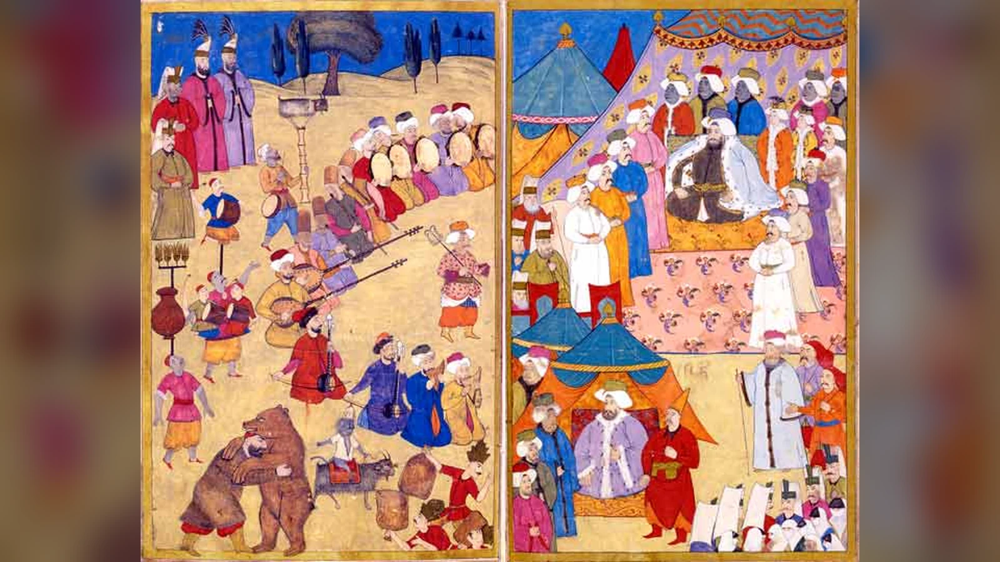
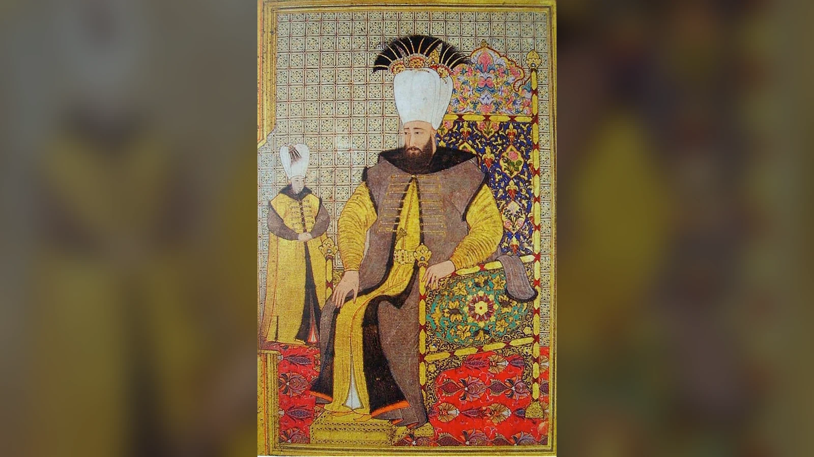
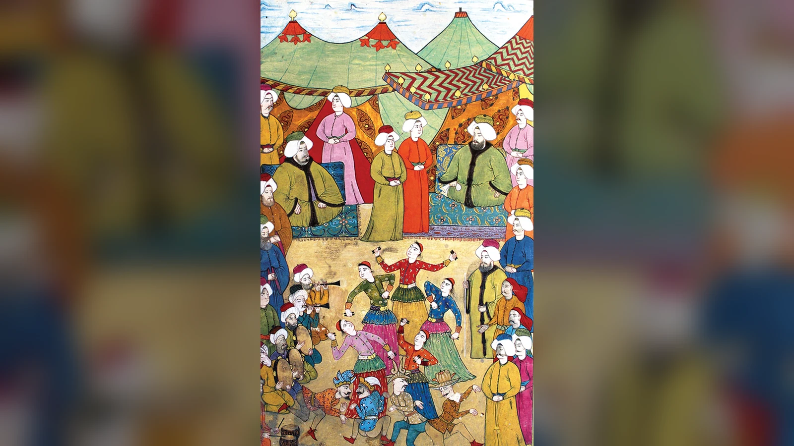
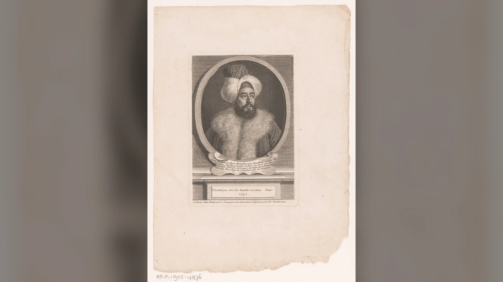
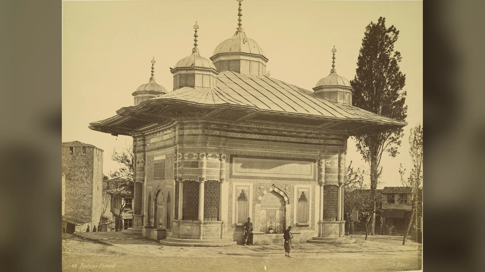
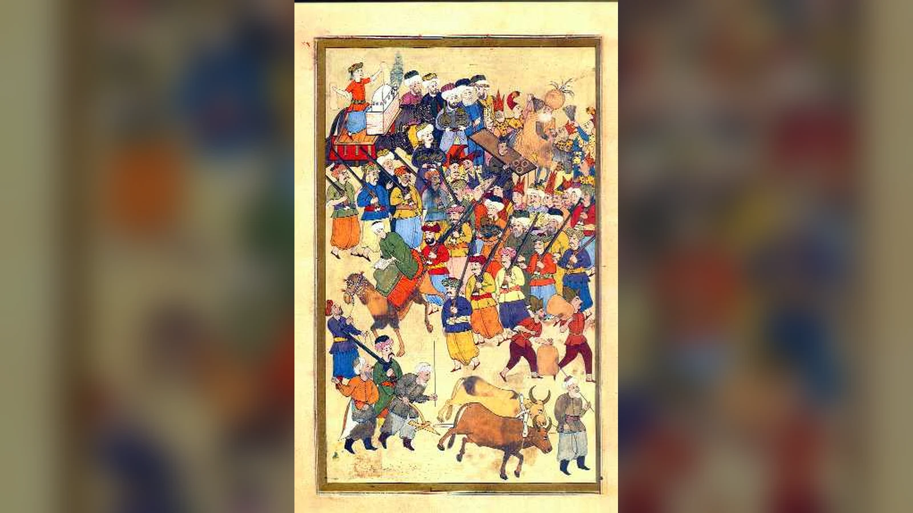
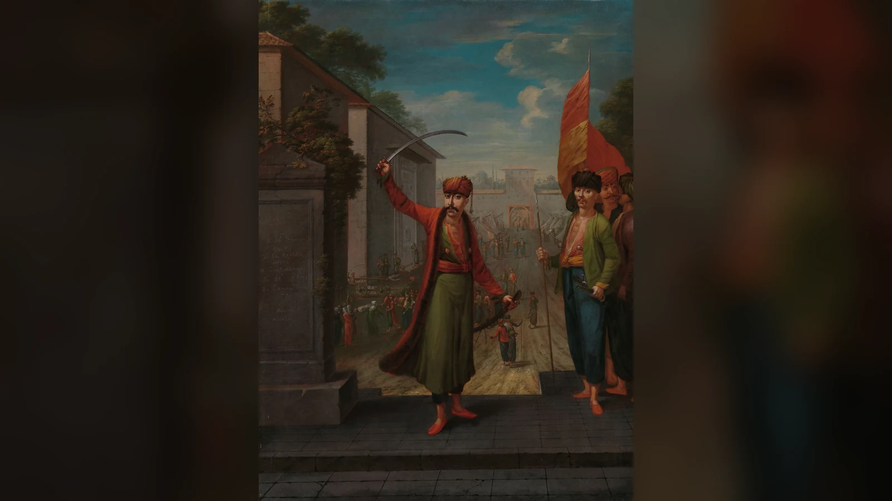
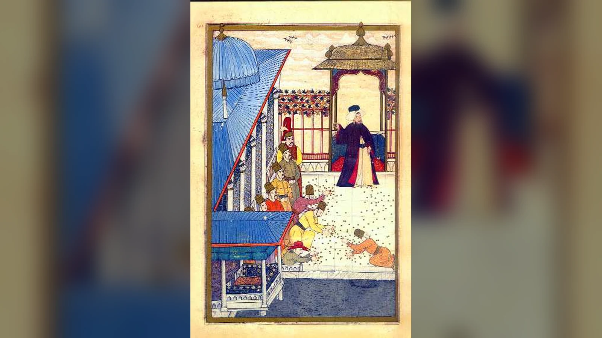
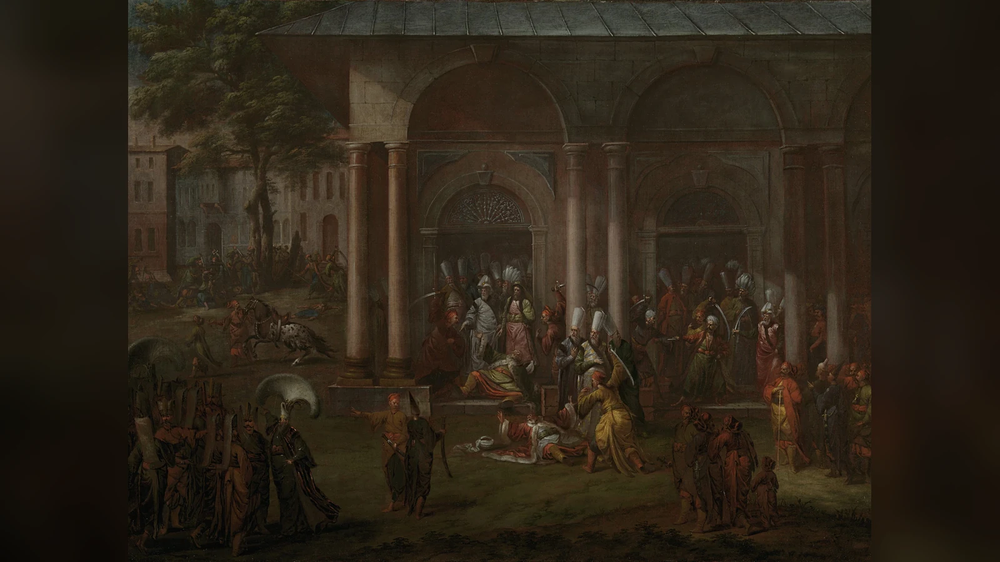
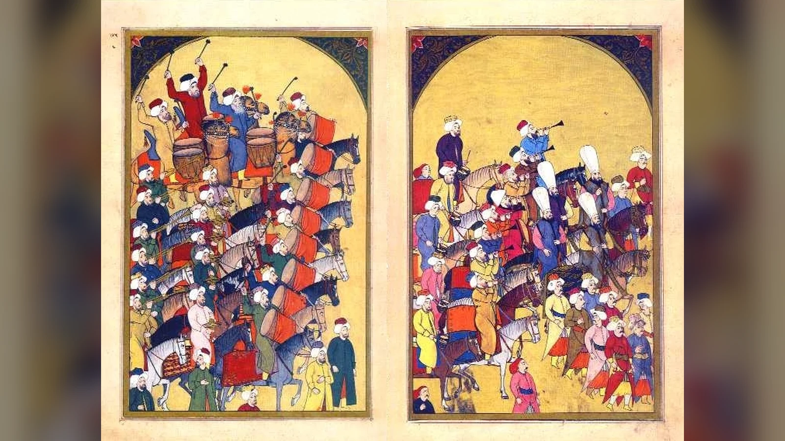

Lale Devri, Osmanlı tarihinde genel olarak 1718 Pasarofça Antlaşması ile 1730 Patrona Halil İsyanı arasındaki on iki yıllık döneme verilen addır. III. Ahmed ile Sadrazam Nevşehirli Damat İbrahim Paşa'nın damgasını vurduğu bu yıllar; İstanbul'daki saray ve bahçe kültürü, lale merakı, yeni eğlence biçimleri, Paris'e gönderilen elçilik, İbrahim Müteferrika'nın matbaası ve şehircilik girişimleriyle hatırlanır. Fakat bugün zihnimizdeki "Lale Devri" görüntüsü, dönemin tamamını anlatmaz. Anadolu'daki bir köylünün, İstanbul'daki bir esnafın ve Sâdâbâd'daki bir saray mensubunun aynı "devri" yaşadığını düşünmek yanıltıcıdır.
1730'da bu düzenin sona ermesi de yalnızca "halk sarayın lüksüne kızdı" cümlesiyle açıklanamaz. Gösterişli tüketim ve yönetici çevrelere duyulan öfke gerçekten etkiliydi; fakat İran cephesindeki kötü haberler, seferin gecikmesi, vergiler ve geçim baskısı, esnafın rahatsızlığı, yeniçerilerin ekonomik ve siyasi çıkarları, Damat İbrahim Paşa'nın yakın çevresine yönelik tepki ve saray içindeki rakip gruplar aynı krizde buluştu. Patrona Halil İsyanı, lalelere karşı çıkmış tek amaçlı bir "gericilik hareketi" değil, farklı hoşnutsuzlukların İstanbul'da ortak bir siyasi hedef bulduğu ayaklanmaydı.
Dahası, 1730'da sona eren şey Osmanlı'nın Avrupa'yı izleme isteği, matbaa veya bütün yenilik girişimleri değildi. Müteferrika Matbaası çalışmayı sürdürdü; bilim, mimarlık ve diplomasi alanındaki değişim I. Mahmud döneminde başka biçimlerde devam etti. Patrona Halil hareketinin yıktığı esas yapı, III. Ahmed ile Damat İbrahim Paşa çevresinde oluşmuş iktidar düzeniydi.
Lale Devri Nedir ve Hangi Yılları Kapsar?
Dönemin başlangıcı olarak 21 Temmuz 1718'de imzalanan Pasarofça Antlaşması kabul edilir. Osmanlı Devleti, 1716-1718 savaşında Avusturya karşısında ağır kayıplar yaşamış; Belgrad ve kuzey Sırbistan'ın yanı sıra Temeşvar gibi önemli bölgeleri Habsburglara bırakmıştı. Buna karşılık Venedik'le yapılan mücadelede Mora'nın Osmanlı yönetimine dönmesi sağlanmıştı. Antlaşma, Avusturya cephesindeki savaşı bitirdi ve İstanbul yönetimine uzun süredir ihtiyaç duyduğu nefes alanını açtı.
Bitiş tarihi ise 28 Eylül 1730'da başlayan Patrona Halil İsyanı'dır. İsyan Nevşehirli Damat İbrahim Paşa'nın öldürülmesine, III. Ahmed'in tahttan çekilmesine ve I. Mahmud'un hükümdar olmasına yol açtı. Bu nedenle 1718-1730 arası, daha sonra tarihçiler tarafından ayrı bir dönem olarak ele alındı.

Bu tarihlendirme kullanışlıdır; yine de dönemin sınırlarını gereğinden fazla kesinleştirmemek gerekir. 1718'den önce başlayan bazı kültürel ve ekonomik eğilimler Pasarofça'dan sonra devam etti. 1730'da ise matbaa, Avrupa'yla diplomatik temas ve yeni mimari arayışlar bir anda ortadan kalkmadı. "Lale Devri" bu yüzden Osmanlı değişiminin başlangıç ve bitişini belirleyen iki duvar değil, III. Ahmed-Damat İbrahim Paşa iktidarının belirli bir evresini tanımlayan tarih yazımı aracıdır.
Dönemin en görünür yüzü İstanbul'dur. Sâdâbâd, Boğaziçi ve Haliç çevresindeki köşkler; saray şenlikleri; lale yetiştiriciliği; çeşmeler ve yeni tüketim biçimleri başkentin seçkin çevrelerinde yoğunlaştı. Osmanlı'nın Balkan, Arap veya Anadolu vilayetlerindeki gündelik hayatı aynı kültürel kalıba sokmak mümkün değildir. "Lale Devri insanı" diye tek bir toplumsal tip yoktu.
"Lale Devri" Adı O Dönemde Kullanılıyor muydu?
Hayır. 1718-1730 yıllarında Osmanlı yönetimi kendi çağını resmen "Lale Devri" diye adlandırmıyordu. Çağdaş kroniklerde olaylar III. Ahmed'in saltanatı, Damat İbrahim Paşa'nın sadrazamlığı, savaşlar, şenlikler ve siyasi gelişmeler üzerinden anlatılır. Bugün kullandığımız dönem adı daha sonra oluştu.
Terimin yerleşmesinde Ahmed Refik Altınay'ın belirleyici rolü vardır. Ahmed Refik, 20. yüzyılın başlarında dönemi "Lâle Devri" başlığı altında ele alan yazı ve kitabıyla 1718-1730 arasını ayrı ve tanınabilir bir tarihsel dönem olarak popülerleştirdi. Osmanlı tarih yazımında daha önce de lale merakı ve III. Ahmed dönemi eğlenceleri anlatılıyordu; fakat "Lâle Devri"nin bugün bildiğimiz dönem adı hâline gelmesi modern tarih yazımının ürünüdür.
Adlandırmanın Yahya Kemal Beyatlı'dan geldiği, Ahmed Refik'in terimi ondan aldığı sık tekrarlanan bir anlatıdır. Selim Karahasanoğlu'nun bu konudaki çalışmaları, kavramın oluşumunu ve Yahya Kemal-Ahmed Refik bağlantısını tartışır. Bununla birlikte popüler anlatılardaki "adı kesin olarak şu kişi şu anda koydu" formülü, kavramın yayınlar içinde zamanla yerleşme sürecini olduğundan daha kesin gösterir.
Bu ayrıntı döneme bakışımızı etkiler. "Lale Devri" dendiğinde lale bahçeleri, eğlence ve zarafet daha baştan merkeze yerleşir. Oysa çağdaş bir yeniçeri, esnaf veya devlet görevlisi 1725'te yaşadığı yılları gelecekte "Lale Devri" diye anılacak özel bir çağ olarak deneyimlemiyordu. Dönemin adı, sonraki kuşakların geçmişi sınıflandırma biçimidir.
Pasarofça'dan Sonra Osmanlı Neden Barışa Yöneldi?
18. yüzyılın ilk yirmi yılı Osmanlı yönetimi için aralıksız askerî sınamalar getirdi. 1699 Karlofça Antlaşması büyük toprak kayıplarını tescillemiş, ardından Rusya ve Venedik'le savaşlar yaşanmıştı. 1716'da Petrovaradin'de Prens Eugen komutasındaki Habsburg ordusuna karşı alınan yenilgi ve 1717'de Belgrad'ın kaybı, yeni bir savaşın maliyetini açık biçimde gösterdi.
Damat İbrahim Paşa'nın sadrazamlığı Pasarofça barışıyla aynı siyasi ortamda güçlendi. Yönetimin önceliği, Avusturya ile yeniden savaşa girmek yerine mali ve askerî toparlanma için zaman kazanmaktı. Bu politika bazen "Osmanlı ilk kez Batı'nın üstünlüğünü kabul etti ve yüzünü Avrupa'ya döndü" şeklinde anlatılır. Cümle fazla düzgündür. Osmanlı elçileri, tüccarları ve devlet adamları Avrupa'yı daha önce de izliyordu; 18. yüzyıldaki değişim, temasın niteliği ve devletin belirli alanlarda Avrupa uygulamalarını daha sistemli inceleme isteğiydi.
Barış siyaseti Damat İbrahim Paşa açısından iç politik bir araçtı. Büyük bir savaşın yokluğu saray çevresinin imar, eğlence, diplomasi ve kültürel girişimlere kaynak ayırmasına imkân verdi. Ancak bu düzen, barış sürdüğü ölçüde avantajlıydı. 1720'lerin sonunda İran cephesindeki kriz büyüdüğünde sadrazamın yıllardır kurduğu siyasi denge kendi aleyhine dönmeye başladı.
Nevşehirli Damat İbrahim Paşa Lale Devri'ni Nasıl Şekillendirdi?
Nevşehirli İbrahim Paşa, bugünkü Nevşehir'in eski adıyla Muşkara'da doğdu ve saray hizmetinde yükseldi. III. Ahmed'in kızı Fatma Sultan'la evlenmesiyle hanedana damat oldu. 1718'de sadrazamlığa geldiğinde padişahla kurduğu yakın ilişki, on iki yıl boyunca iktidarın merkezindeki isim olmasını sağladı.
İbrahim Paşa'nın yönetimi barış siyasetini, İstanbul'un yeniden düzenlenmesini ve saray çevresinde yeni bir kültürel hayatı destekledi. Kâğıthane deresi boyunca kurulan Sâdâbâd kompleksi bunun en görünür örneğiydi. Çeşmeler, köşkler, bahçeler ve su düzenlemeleri başkentin bazı bölgelerinin kullanımını değiştirdi. III. Ahmed Çeşmesi gibi dönemin anıtsal eserleri de mimari ve süslemede yeni zevklerin güçlendiğini gösterir.
Sadrazamın kültürel girişimleri bununla sınırlı değildi. Paris elçiliği, tercüme faaliyetleri, matbaanın kuruluşuna verilen destek ve çeşitli ilim heyetleri onun döneminde gerçekleşti. Bunları bugünkü anlamda tek bir "modernleşme programının" maddeleri gibi görmek doğru olmaz. Ortada yayımlanmış bir reform manifestosu yoktu. Farklı ihtiyaçlardan doğan uygulamalar, daha sonra tarihçiler tarafından ortak bir dönüşüm tablosu içinde okundu.
İbrahim Paşa'nın uzun iktidarı aynı zamanda güçlü bir patronaj ağı oluşturdu. Akrabalarının ve yakınlarının görevlere getirildiği, makam ve imtiyazların dar bir çevrede toplandığı yönündeki eleştiriler büyüdü. Osmanlı siyasetinde akrabalık ve himaye yeni değildi; fakat sadrazamın on iki yıl boyunca iktidarda kalması, ona karşı rahatsızlığın da kişiselleşmesine yol açtı. İran cephesindeki başarısızlıklar başladığında hükümete duyulan tepkinin en görünür hedefi İbrahim Paşa oldu.
Onu yalnız zevk düşkünü bir saray adamı saymak matbaa, diplomasi ve şehircilik gibi girişimleri açıklayamaz. Kusursuz bir reformcu portresi çizmek ise patronaj, mali yükler ve siyasi muhalefeti görünmez kılar. İbrahim Paşa'nın gücü de kırılganlığı da aynı yerdeydi: III. Ahmed'le kurduğu yakın ilişki ve saray merkezli yönetim ağı.
Lale Devri Gerçekten Bir Eğlence ve İsraf Dönemi miydi?
Saray eğlenceleri hayal ürünü değildir. III. Ahmed döneminde özellikle İstanbul'un seçkin çevrelerinde gece şenlikleri, helva sohbetleri, bahçe eğlenceleri, şiir meclisleri ve Boğaziçi gezileri yapılıyordu. 1720'de şehzadelerin sünneti için düzenlenen ve günlerce süren büyük şenlik, Seyyid Vehbî'nin Sûrnâme-i Vehbî adlı eserinde anlatıldı; Levnî'nin minyatürleri bu törenlerin en değerli görsel kayıtları arasındadır.
Lale merakı da gerçektir. İstanbul'da çok sayıda lale çeşidi yetiştiriliyor, çiçeklere şiirsel isimler veriliyor ve nadir soğanlar yüksek fiyatlara ulaşabiliyordu. Devletin lale fiyatlarındaki aşırı artışları sınırlamak için narh uyguladığına ilişkin kayıtlar, bu merakın yalnız estetik değil ekonomik bir boyutu bulunduğunu gösterir.

Bunun Hollanda'daki 17. yüzyıl "tulip mania"sıyla aynı olay olduğu düşünülmemelidir. Hollanda örneği belirli bir ticari piyasa ve spekülasyon tartışmasıyla ilgilidir. İstanbul'daki lale kültürü ise saray çevresi, bahçecilik, prestij, şiir ve tüketim alışkanlıklarıyla bağlantılıydı. Her iki toplumda lalenin statü nesnesine dönüşmesi karşılaştırılabilir; ekonomik mekanizmaları özdeş değildi.
Sâdâbâd bu yeni seçkin hayatının simgesi hâline geldi. Kâğıthane'deki köşkler ve bahçeler, Avrupa'daki saray mekânlarından esinlenen bazı unsurları Osmanlı bahçe ve mesire gelenekleriyle birleştiriyordu. Burada yapılan eğlenceler, devletin tamamının on iki yıl boyunca "zevk ve sefa" içinde yaşadığı anlamına gelmez. Görünürlüğü yüksek saray kültürü, tarihsel hafızada gündelik hayatın çok daha geniş ve sıradan dünyasını gölgede bıraktı.
"İsraf" meselesi de iki düzeyde ele alınmalıdır. Saray ve yönetici çevrelerin tüketimi muhalifler tarafından gerçekten eleştirildi. Yeni köşkler, bahçeler ve eğlenceler ekonomik sıkıntı yaşayan gruplar için siyasi bir sembole dönüşebiliyordu. Fakat 1730 isyanının bütçesini çıkarıp "şu kadar lale harcaması yapıldı, halk bu nedenle ayaklandı" diye doğrusal bir neden-sonuç ilişkisi kurmak mümkün değildir.
Saray tüketimi kendi başına isyan yaratmadı. Asıl sorun, görünür lüksün savaş haberleri, vergiler, fiyat baskısı ve yönetici kadroya duyulan güvensizlikle aynı anda algılanmasıydı. Sâdâbâd'daki bir eğlence, barış ve refahın göstergesi olarak da görülebilirdi; İran cephesinden kötü haberlerin geldiği bir anda yöneticilerin halkın sorunlarından kopukluğunun simgesine de dönüşebilirdi.
Lale Devri'nde Hangi Yenilikler Yapıldı?
Dönemin "yenilikleri" tek bir reform planının parçaları değildi. Diplomasi, basım, yangınla mücadele, tercüme ve şehir düzenlemesi farklı ihtiyaçlardan doğdu. Yine de bu girişimlerin ortak bir yönü vardı: İstanbul yönetimi, bilgi ve teknik uygulamaları daha sistemli biçimde toplamaya ve kullanmaya ilgi gösteriyordu.
Yirmisekiz Çelebi Mehmed Efendi'nin Paris elçiliği
Yirmisekiz Çelebi Mehmed Efendi 1720'de Fransa'ya gönderildi ve 1721'de Paris'e ulaştı. Görevi sürekli bir Osmanlı büyükelçiliği kurmak değildi. Belirli bir diplomatik görev için gönderilmiş geçici elçiydi. Osmanlı'nın Avrupa başkentlerinde sürekli elçilikler açması III. Selim döneminde, 1790'larda gerçekleşecekti.
Mehmed Efendi'nin Sefâretnâmesi Paris'te gördüğü sarayları, bahçeleri, törenleri, askerî kurumları ve çeşitli teknik uygulamaları anlattı. Versailles ve başka mekânlara ilişkin gözlemleri İstanbul'daki seçkin çevrelerde ilgi uyandırdı. Sâdâbâd'ı Versailles'ın basit bir kopyası saymak ise iki farklı mimari ve toplumsal geleneği gereğinden fazla düzleştirir.
Elçiliğin asıl önemi, "Avrupa ilk kez keşfedildi" düşüncesinden çok, gözlem bilgisinin saray çevresinde dolaşıma girmesidir. Avrupa'ya gönderilen Osmanlı elçileri daha önce de raporlar hazırlamıştı. Mehmed Efendi'nin metni, 18. yüzyılın yeni siyasi ortamında Avrupa şehir ve kurumlarının nasıl merakla izlendiğini gösteren güçlü bir örnektir.
İbrahim Müteferrika Matbaası
Lale Devri'nin en çok bilinen yeniliği İbrahim Müteferrika ve Said Efendi'nin girişimiyle kurulan matbaadır. 1727'de alınan izinle Türkçe ve Arap harfli eserlerin basılacağı matbaanın faaliyeti resmiyet kazandı. Şeyhülislam Yenişehirli Abdullah Efendi'nin fetvası, dinî olmayan eserlerin basılmasına izin veren çerçevenin parçasıydı.
"Osmanlı'daki ilk matbaa 1727'de kuruldu" cümlesi yanlıştır. Osmanlı topraklarında Yahudi, Ermeni ve Rum toplulukları yüzyıllardır matbaa kullanıyordu. 1490'lardan itibaren İstanbul'da Yahudi matbaacılığına ilişkin kayıtlar vardır. Müteferrika'nın yeniliği, Osmanlı Türkçesi ve Arap harfleriyle Müslüman okuyucu çevresine yönelik basılı eser üretimini kurumsallaştırmasıydı.

Matbaanın ilk kitabı 1729'da yayımlanan iki ciltlik Vankulu Lügati oldu. Ardından tarih, coğrafya ve dil alanında eserler basıldı. Dinî metinlerin basımı başlangıçta kapsam dışında tutuldu. Matbaanın üretim hacmi bugünkü gözle bakıldığında sınırlıydı; el yazması kültürü bir gecede ortadan kalkmadı ve hattatlar işlerini topluca kaybetmedi.
Daha da önemlisi, Müteferrika Matbaası Patrona Halil İsyanı sırasında yok edilmedi. İsyan 1730'da III. Ahmed-Damat İbrahim Paşa düzenini sona erdirdiği hâlde matbaa I. Mahmud döneminde de eser basmaya devam etti. Bu tek olgu bile 1730 hareketini "bütün yenilikleri ortadan kaldıran matbaa düşmanı isyan" olarak anlatmanın neden sorunlu olduğunu gösterir.
Tercüme, kâğıt ve bilgi üretimi
Damat İbrahim Paşa döneminde tarih ve başka alanlarda tercüme heyetleri oluşturuldu. Doğu ve Batı kaynaklarına yönelik ilgi, Osmanlı seçkinlerinin bilgi repertuvarını genişletme çabasının parçasıydı. Bu faaliyetleri modern bir devlet tercüme bürosuyla karıştırmamak gerekir; fakat saray himayesinde ortak çalışma yapılması dönemin kültürel atmosferini gösterir.
Kâğıt üretimini geliştirme girişimleri de matbaayla bağlantılı düşünülür. Yalova'da kâğıt imalathanesinin kuruluş süreci Lale Devri'nin son yıllarında başladı, işletmenin faaliyete geçmesi ise I. Mahmud dönemine uzandı. Bu kronoloji, 1730'u bütün projelerin aniden kesildiği kesin bir duvar olarak görmemenin başka bir nedenidir.
Tulumbacılar ve yangınla mücadele
İstanbul'un ahşap yapı dokusu büyük yangınlara son derece açıktı. Fransız asıllı olup Osmanlı hizmetine giren David, yani Gerçek Davud Ağa'nın öncülüğünde yangın tulumbalarının kullanılması ve bir tulumbacı teşkilatının oluşturulması bu dönemin pratik şehir uygulamalarındandır. Bu yapı, 19. yüzyıldaki modern itfaiye teşkilatıyla aynı kurum değildi.
Yangınla mücadelede teknik araç kullanılması, Lale Devri yeniliklerinin yalnız saray zevkinden ibaret olmadığını gösterir. Yine de tek bir tulumba teşkilatından "modern belediyecilik kuruldu" sonucu çıkarmak abartılı olur. İstanbul yönetiminde yangın, su, temizlik ve asayiş gibi alanlar farklı kurum ve görevliler üzerinden yürütülüyordu.
Çiçek aşısı ve Lady Mary Wortley Montagu
İngiliz elçisinin eşi Lady Mary Wortley Montagu, 1717-1718'de Osmanlı topraklarında bulunduğu sırada çiçek hastalığına karşı uygulanan variolasyon yöntemini gözlemledi. Mektuplarında yaşlı kadınların çocuklara küçük miktarda çiçek materyali uyguladığı işlemi anlattı ve yöntemin İngiltere'de tanınmasına katkı sağladı.
Burada "çiçek aşısını Lale Devri Osmanlıları icat etti" demek doğru değildir. Variolasyon Asya'nın farklı bölgelerinde daha eski uygulamalara sahipti. Osmanlı örneğinin tarihsel önemi, yöntemin İstanbul'da uygulanıyor olması ve Montagu aracılığıyla Britanya'daki tartışmalara güçlü biçimde taşınmasıdır.
Şehir güvenliği ve düzenlemelerinde de çeşitli girişimler görüldü. Kız Kulesi'nde geceleri gemilere yol gösterecek ışık kullanılması gibi uygulamalar dönemin şehir hayatındaki pratik düzenlemeleri arasında anılır. Bunların her birini "Batılılaşma" başlığı altında toplamak yerine hangi soruna cevap verdiklerine bakmak daha açıklayıcıdır.
Avrupa Etkisi Lale Devri'nde Ne Kadar Güçlüydü?
Paris elçiliği ve saray çevresinin Fransız kültürüne ilgisi nedeniyle Lale Devri sık sık "Osmanlı'nın Batılılaşmaya başladığı dönem" diye tanımlanır. Avrupa etkisi gerçektir; fakat "Batılılaşma" kelimesi tek başına neyin değiştiğini açıklamaz.
18. yüzyıl başındaki Osmanlı seçkinleri Avrupa saray törenlerini, bahçe düzenlemelerini, askerî teknikleri ve diplomatik pratikleri izliyordu. Yirmisekiz Çelebi'nin raporu bu merakın en açık belgelerindendir. Avrupa'dan gelen eşyalar ve süsleme tercihleri de seçkin tüketiminde yer buldu. Buna rağmen Osmanlı saray kültürü kendi tören, mesire, şiir ve mimari geleneklerini terk edip Fransız sarayının kopyasına dönüşmedi.
Mimarlıkta da kronolojiye dikkat gerekir. 18. yüzyıl boyunca Osmanlı mimarisinde Avrupa barok ve rokoko repertuvarıyla ilişkili yeni biçimler giderek güçlenecekti. Nuruosmaniye Camii gibi olgun Osmanlı baroğu örnekleri ise Lale Devri'nden sonradır. 1720'lerin süsleme ve mekân deneylerini sonraki on yılların bütün barok özellikleriyle aynılaştırmak, gelişimin aşamalarını siler.

Daha yararlı soru, "Osmanlı ne zaman Batılılaştı?" yerine "hangi Osmanlı çevreleri Avrupa'daki hangi uygulamaları neden ilginç buldu?" sorusudur. Diplomasi için Avrupa devlet düzeni, saray için bahçe ve tören kültürü, askerî çevreler için teknik bilgi farklı anlamlara sahipti. Etkileşim seçici ve karşılıklıydı.
Lale Devri'nde Halkın Hayatı Nasıldı?
Lale Devri denince karşımıza çıkan minyatürlerin ve köşklerin çoğu yönetici seçkinlerin dünyasını gösterir. İstanbul'un büyük nüfusu ise esnaf, zanaatkâr, hamal, kayıkçı, asker, din görevlisi, göçmen, hizmetçi ve gündelik emekçilerden oluşuyordu. Onların hayatı saray şenliklerinin ritmine göre ilerlemiyordu.
18. yüzyıl İstanbul'u hızla büyüyen ve yoğun göç alan bir şehirdi. Gıda arzı, ekmek fiyatı, iş bulma imkânı ve lonca düzeni gündelik hayat açısından saray bahçelerinden çok daha doğrudan meselelerdi. Devlet temel malların fiyatlarını narhla düzenlemeye çalışıyor, İstanbul'un iaşesini güvence altında tutmak için geniş bir tedarik sistemi işletiyordu.
Yeniçeriler de yalnız kışlada yaşayan profesyonel askerlerden oluşan kapalı bir topluluk değildi. 18. yüzyılda birçok yeniçeri şehir ekonomisi ve esnaf çevreleriyle iç içeydi. Dükkân işleten, zanaatla uğraşan veya ticari ortaklıklara katılan askerler vardı. Bu durum, 1730'daki ayaklanmada "esnaf" ile "yeniçeri"yi birbirinden tamamen ayrı iki blok gibi düşünmeyi zorlaştırır.

Ekonomik hoşnutsuzluğun ölçüsü konusunda da dikkatli olmak gerekir. Dönemin bütün İstanbul halkını açlık sınırında, isyan etmek için fırsat bekleyen tek bir kitle gibi tasvir etmek kanıtların ötesine geçer. Fiyatlar, vergiler ve savaş finansmanı farklı grupları farklı ölçülerde etkiliyordu. Bazı esnaf grupları mevcut düzenden yararlanırken başkaları rekabet veya vergi yükü nedeniyle rahatsız olabiliyordu.
Sarayın görünür tüketimi tam da bu farklı dünyaların kesiştiği yerde siyasi anlam kazandı. Kâğıthane'deki yeni köşkler ve eğlenceler kendi başına ekonomik krizin nedeni değildi; fakat devletin savaş ve mali sorunlarla karşılaştığı anda yönetici çevrenin ayrıcalığının görünür simgesi hâline gelebildi. 1730 isyanında köşklerin hedef seçilmesi de bu sembolik boyutla birlikte okunmalıdır.
Patrona Halil Kimdi?
Patrona Halil'in hayatı hakkındaki bilgiler çağdaş ve sonraki kaynaklarda birbirinden farklıdır. Genel olarak Arnavut kökenli olduğu, bir dönem yeniçeri veya denizci çevreleriyle ilişkili bulunduğu ve İstanbul'da düşük statülü işlerde çalıştığı kabul edilir. Hamam tellaklığı yaptığına ilişkin anlatı çok yaygındır. Biyografisinin ayrıntıları ise kesin değildir.
"Patrona" lakabının kökeni konusunda da farklı açıklamalar vardır. Bazı anlatılar onun bir Osmanlı gemisinde "patrona" rütbesiyle veya bu çevreyle bağlantılı olduğunu ileri sürer; başka yorumlar lakabın daha karmaşık bir geçmişe sahip olabileceğini gösterir. Elde kesin kayıt bulunmadığında lakaptan hareketle ayrıntılı bir denizcilik kariyeri kurmak güvenli değildir.

Halil'in 1730'dan önce çeşitli askerî ve toplumsal karışıklıklara katıldığına ilişkin aktarımlar bulunur. Ancak bunların hepsi aynı derecede doğrulanmış değildir. Çağdaş tarihçilerin onu anlatırken isyancı kimliğinin etkisi altında yazdıkları unutulmamalıdır. Bir ayaklanmanın lideri hakkında devlet çevresinde üretilen metinlerin tarafsız biyografi olması beklenemez.
Popüler anlatıda Patrona Halil, hamamdan çıkan birkaç arkadaşıyla bütün İstanbul'u peşine takan yoksul bir tellak gibi gösterilir. İlk isyancı grubun küçük olması mümkündür; asıl mesele grubun neden saatler ve günler içinde büyüyebildiğidir. Halil'in esnaf, yeniçeri ve yönetim karşıtı çevrelerle bağlantıları, hareketin yalnız kişisel karizmayla açıklanamayacağını gösterir.
İsyan onun adıyla anılsa da hareket tek kişinin projesi değildi. Muslu Beşe ve başka isimler lider kadro içinde anılır. Yeniçeri ortaları, esnaf çevreleri ve mevcut yönetimden rahatsız siyasi aktörlerin desteği olmadan küçük bir grubun sadrazamı öldürtecek ve padişahı tahttan indirecek güce ulaşması mümkün olmazdı.
Patrona Halil İsyanı Neden Çıktı?
1730 isyanının nedenleri üzerine yazılan eski anlatılar çoğu zaman iki uçta toplandı. Bir tarafta "halk sarayın sefahatine dayanamadı" açıklaması, diğer tarafta "gericiler matbaa ve yeniliklere saldırdı" yorumu vardı. Çağdaş kaynaklar ve modern araştırmalar daha dağınık bir tablo gösterir. Ayaklanma, farklı rahatsızlıkların aynı anda Damat İbrahim Paşa yönetimine yönelmesiyle büyüdü.
Damat İbrahim Paşa'ya karşı siyasi muhalefet
Sadrazamın 1718'den beri iktidarda olması, saray ve bürokrasi içinde güçlü bir çevre oluşturmuştu. Yakınlarının görevlere getirildiği ve devlet imkânlarının belirli ailelerin elinde toplandığı düşüncesi rakip grupların tepkisini artırdı. Osmanlı siyasetinde patronaj olağan bir mekanizmaydı; fakat uzun süreli iktidar, dışarıda kalan çevrelerin sayısını ve rahatsızlığını büyütebilirdi.
Bu muhalefetin tamamı "halk" değildi. Saray ve bürokrasi içindeki rakipler de sadrazamın düşüşünden çıkar sağlayabilirdi. 1730 krizinde sokaktaki isyancılarla yönetici seçkinler arasındaki ilişkiyi tek bir gizli komploya indirgemek mümkün değildir; fakat isyanın yalnız aşağıdan yukarı kendiliğinden patlayan sosyal öfke olmadığı da açıktır.
Saray tüketimi ve görünür ayrıcalık
Sâdâbâd köşkleri, bahçeler, eğlenceler ve lale merakı sadrazam çevresinin en görünür kültürel simgeleriydi. Bunlar muhalefet dilinde israf ve ahlaki bozulma göstergesi olarak kullanılabiliyordu. Yönetici seçkinlerin tüketim biçimi, ekonomik sıkıntı yaşayan kesimlerin gözünde siyasi meşruiyet sorununa dönüşebiliyordu.
Yine de "halk lale fiyatlarına kızdı ve isyan etti" gibi bir cümle dönemin siyasi yapısını açıklamaz. Lale, daha çok sonradan bütün döneme adını veren güçlü bir semboldür. İsyancıların programının merkezinde lale yetiştiriciliğini yasaklamak veya çiçek kültürünü yok etmek yoktu.
Esnaf, fiyatlar ve vergiler
İstanbul'un esnaf dünyası devlet düzenlemeleri, lonca ilişkileri, vergi talepleri ve askerî zümrelerle iç içeydi. Ekonomik baskıların bazı gruplarda hoşnutsuzluk yarattığı bilinir. İran savaşı gibi yeni askerî yükler, mali talepleri ve sefer hazırlıklarını daha görünür hâle getirdi.
Ariel Salzmann ve başka araştırmacıların 18. yüzyıl Osmanlı siyasal ekonomisi üzerine çalışmaları, dönemi yalnız saray merkezli kültür tarihi olarak okumamanın önemini gösterir. Devletin gelir toplama biçimleri, vergi çiftlikleri, şehir ekonomisi ve askerî zümrelerin çıkarları siyasal hareketliliğin zeminini oluşturuyordu.
Yeniçerilerin çıkarları
Yeniçeriler 1730 hareketinin büyümesinde belirleyici aktörlerden biri oldu. Fakat "yeniçeriler yeniliğe karşıydı" açıklaması yetersizdir. 18. yüzyıl yeniçerileri şehir ekonomisinde yer alıyor, esnafla akrabalık ve ortaklık ilişkileri kuruyor ve kendi kurumsal ayrıcalıklarını korumaya çalışıyordu. Siyasi krizler, askerî disiplin meselesi kadar ekonomik çıkarları da etkileyebiliyordu.
İsyanın başlangıcında bütün Yeniçeri Ocağı tek bir emirle Patrona Halil'in arkasına geçmedi. Hareketin büyümesi ve devletin kararsızlığı, farklı askerî grupların katılımını kolaylaştırdı. Bu süreç, küçük bir sokak grubunun nasıl rejim krizine dönüşebildiğini anlamak açısından önemlidir.
İran cephesi neden belirleyiciydi?
İsyanın yakın nedenleri arasında İran cephesindeki gelişmeler özel bir yer tutar. Safevî Devleti'nin çöküşü sonrasında İran'da oluşan güç boşluğu Osmanlı ve Rusya'yı bölgeye çekmişti. Osmanlı orduları 1720'lerde batı İran ve Kafkasya'da geniş alanlara girdi. Fakat Nadir Han'ın yükselişi dengeleri değiştirdi.
1730'da İran kuvvetlerinin Osmanlılara karşı başarıları ve özellikle Tebriz'in kaybedildiğine ilişkin haberler İstanbul'daki siyasi atmosferi ağırlaştırdı. Hükümet yeni bir sefer hazırlığına girişti. III. Ahmed ve Damat İbrahim Paşa'nın Üsküdar'a geçerek orduyu hazırlaması bekleniyordu; fakat seferin ilerleyişi ve yönetimin kararsız göründüğü algısı muhalefete güçlü bir malzeme verdi.
Burada kronoloji önemlidir. İstanbul'daki insanlar yalnız "saray eğleniyor" diye değil, devlet doğuda askerî baskı altındayken yöneticilerin savaşı gerektiği gibi yönetemediğine inanarak da tepki gösteriyordu. Savaş haberi, yıllardır biriken sadrazam karşıtlığını acil bir siyasi krize dönüştürdü.
Söylenti ve propaganda
18. yüzyıl İstanbul'unda kahvehaneler, çarşılar, cami çevreleri, askerî kışlalar ve esnaf ağları haberin dolaştığı alanlardı. Resmî bilgi ile söylenti arasındaki sınır bugünkü medya ortamından farklıydı. Cephedeki yenilgiler, sadrazamın niyetleri veya sarayın harcamaları hakkında yayılan haberler siyasi mobilizasyonu etkileyebiliyordu.
İsyanın başarısını yalnız ekonomik "nedenler listesi" açıklamaz. Bir ayaklanmanın büyümesi için hoşnutsuz grupların ortak bir hedef ve fırsat görmesi gerekir. 1730'da bu hedef Damat İbrahim Paşa ve çevresiydi; fırsatı yaratan ise İran kriziyle yönetimin tereddütlü tepkisinin birleşmesiydi.
Kanıtların birlikte gösterdiği tablo budur: Patrona Halil İsyanı tek bir nedenden doğmadı. Saray tüketimine tepki, ekonomik sorunlar, yeniçeri ve esnaf çıkarları, sadrazamın patronaj ağına karşı siyasi muhalefet ve İran cephesindeki başarısızlıklar birbirini güçlendirdi. Bu yüzden isyanın gerçek açıklaması "lale" kelimesinden çok iktidarın meşruiyetindeki çözülmede aranmalıdır.
Patrona Halil İsyanı Nasıl Başladı ve Yayıldı?
Ayaklanma 28 Eylül 1730'da başladı. Patrona Halil ve çevresindeki küçük grup İstanbul'da harekete geçti ve kısa sürede Atmeydanı, yani bugünkü Sultanahmet Meydanı çevresinde görünür hâle geldi. İlk grubun tam sayısı kaynaklarda farklı aktarılır; bazı kronikler birkaç düzine kişiden söz eder. Sonradan büyüyen hareketin başlangıç sayısını kesin rakama bağlamak güvenli değildir.
İsyancılar çarşı ve pazarlarda destek aradı. Dükkânların kapanması, esnafın katılımı ve yeniçeri çevrelerinin harekete eklenmesi ayaklanmanın ölçeğini değiştirdi. Devlet yönetiminin ilk saatlerde kararlı bir askerî müdahalede bulunamaması isyancılara zaman kazandırdı. Başkentteki askerî güçlerin güvenilirliği de saray açısından belirsizdi.

Talepler giderek somutlaştı. Damat İbrahim Paşa ve onunla özdeşleştirilen bazı devlet adamlarının teslim edilmesi istendi. İsyancıların öfkesi yalnız belirli bir vergi veya uygulamanın kaldırılmasına yönelmiyordu; hükümet kadrosunun tasfiyesi talep ediliyordu. Bu durum hareketin kısa sürede rejim krizine dönüştüğünü gösterir.
III. Ahmed'in önündeki sorun, isyanı bastırmak için kullanacağı kuvvetlerin sadakatinden emin olamamasıydı. Başkent ayaklanmalarında yeniçerilerin tutumu belirleyiciydi. Saray yanlış bir müdahalenin hareketi daha da büyüteceğinden çekindi. Kararsızlık ise Patrona Halil ve çevresinin pazarlık gücünü artırdı.
Olayları sonradan yazılmış roman sahneleriyle doldurmak kolaydır: sarayda söylenmiş kesin cümleler, Patrona'nın meydanda yaptığı uzun konuşmalar veya kapalı kapılar ardındaki komplolar. Çağdaş kaynaklar olayların ana çizgisini verir, fakat her konuşmanın tutanağı yoktur. Tarihsel anlatıda bilinmeyen boşluğu dramatik diyalogla doldurmamak gerekir.
Damat İbrahim Paşa Nasıl Öldürüldü?
İsyancıların temel taleplerinden biri Nevşehirli Damat İbrahim Paşa'nın ve onunla birlikte anılan bazı devlet adamlarının cezalandırılmasıydı. III. Ahmed önce sadrazamını görevden uzaklaştırarak ve ardından isyancılara teslim ederek krizi yatıştırmaya çalıştı. İbrahim Paşa öldürüldü; cesedinin isyancılara verildiği ve teşhir edildiği çağdaş anlatılarda yer alır.
Bu karar, padişahın on iki yıldır en yakın siyasi ortağını feda etmesi anlamına geliyordu. İsyanın ulaştığı güç düşünüldüğünde III. Ahmed'in hareket alanı ciddi biçimde daralmıştı. Saray, sadrazamın ortadan kaldırılmasının kalabalığı dağıtacağını umuyordu.
Fakat sorun artık yalnız İbrahim Paşa değildi. Devlet yönetiminin isyancılara boyun eğdiğinin görülmesi, hareketin yeni talepler ileri sürmesine imkân verdi. Sadrazamın ölümü, III. Ahmed'in otoritesini yeniden kurmadı; aksine padişahın iktidarının da pazarlık konusu hâline geldiğini gösterdi.
III. Ahmed Neden Tahttan İndirildi?
Damat İbrahim Paşa'nın öldürülmesinden sonra ayaklanma sona ermedi. Patrona Halil ve çevresinin etkisi devam etti; III. Ahmed'in tahtta kalması da giderek zorlaştı. Padişah sonunda 1 Ekim 1730'da tahttan çekildi ve yerine yeğeni I. Mahmud geçti.
Burada hanedan değişmedi. III. Ahmed de I. Mahmud da Osmanlı hanedanındandı. Değişen, padişah ve onunla özdeşleşen yönetici kadroydu. Bu ayrım, isyanı bir hanedan devrimi gibi sunmamak açısından önemlidir.
III. Ahmed'in tahttan ayrılması yalnız Damat İbrahim Paşa'yı koruduğu için verilmiş bir ceza değildi. Sarayın ayaklanmayı erken aşamada bastıramaması, yönetimin İran savaşı karşısında zayıf görünmesi ve isyancıların başkentte fiilî güç kazanması padişahın otoritesini aşındırdı. Sadrazamın teslim edilmesi de bu otoriteyi geri getiremedi.
I. Mahmud tahta çıktığında isyancı liderleri hemen karşısına almak yerine bir süre onların nüfuzunu kabul etmek zorunda kaldı. Bu durum, 1730 krizinin yalnız bir padişah değişimiyle kapanmadığını gösterir. Yeni hükümdarın önündeki ilk sorunlardan biri, kendisini tahta taşıyan sokak ve askerî güç odaklarını denetim altına almaktı.
Sâdâbâd ve Köşkler Gerçekten Tamamen Yıkıldı mı?
Patrona Halil İsyanı denince anlatılan en güçlü sahnelerden biri, isyancıların Lale Devri'nin bütün köşklerini yerle bir etmesidir. Gerçekte yıkım yaşandı; fakat "İstanbul'daki bütün köşkler bir gecede tamamen yok edildi" biçimindeki anlatı fazla geneldir.
İsyancıların özellikle Damat İbrahim Paşa ve yönetici seçkinlerle özdeşleşen bazı yapıların yıkılmasını talep ettiği bilinir. Kâğıthane ve Sâdâbâd çevresindeki köşklerin bir bölümü zarar gördü veya ortadan kaldırıldı. Buna karşılık yapıların akıbeti yalnız 1730 isyanıyla açıklanamaz. Ahşap saray ve köşkler sonraki yıllarda yangın, yeniden inşa, kullanım değişikliği ve yeni imar faaliyetleriyle de dönüştü.
Yıkımı "sanata düşman cahil kalabalığın öfkesi" olarak okumak da tek boyutludur. Köşkler belirli bir estetik zevkin yanında iktidar ve ayrıcalığın fiziksel simgeleriydi. İsyancılar açısından hedef alınmaları, yöneticilerin yaşam tarzına ve siyasi çevresine saldırı anlamı taşıyordu. Bu, tahribatı kültürel açıdan önemsiz yapmaz; fakat eylemin siyasi sembolizmini açıklar.
Sâdâbâd da 1730'dan sonra hafızadan silinmedi. Bölge sonraki padişahlar döneminde yeniden düzenlendi ve Kâğıthane 19. yüzyılda da önemli bir mesire ve saray alanı olmayı sürdürdü. Bugün "Lale Devri Sâdâbâd'ı" diye aradığımız özgün yapıların çoğunun kaybolmasında yüzyıllara yayılan değişimlerin payı vardır.
Patrona Halil İsyanı Yeniliklere Karşı Bir Ayaklanma mıydı?
İsyanın "gerici halkın modernleşmeye karşı ayaklanması" olduğu yorumu, uzun süre okul kitaplarına ve popüler tarih anlatısına sızdı. Bu yorumun en büyük sorunu, isyancıların somut talepleriyle sonradan onlara yüklenen tarihsel rolü birbirine karıştırmasıdır.
Eğer hareketin temel amacı yeni teknikleri yok etmek olsaydı, Müteferrika Matbaası açık bir hedef olurdu. Oysa matbaa isyanla ortadan kalkmadı ve I. Mahmud döneminde yayın yapmayı sürdürdü. Patrona Halil'in matbaayı bastığı, makineleri parçalattığı veya basımı yasaklattığı yönünde güvenilir bir olay dizisi yoktur.
Avrupa'ya yönelik diplomatik ilgi de 1730'da sona ermedi. Osmanlı yönetimi sonraki yıllarda Avrupa devletlerini izlemeyi ve elçiler göndermeyi sürdürdü. Mimari ve süsleme alanındaki değişim 18. yüzyılın ortalarında daha da görünür hâle geldi. Lale Devri'yle ilişkilendirilen bazı kurumlar değişti veya ortadan kalktı, fakat bu sonuçların her biri aynı "yenilik düşmanlığı" programından doğmadı.
Tulumbacı teşkilatının isyan sonrasındaki durumu, saray çevresindeki patronajın değişmesi ve şehir kurumlarının yeniden örgütlenmesi gibi meseleler ayrı ayrı değerlendirilmelidir. Bir hükümetin düşmesiyle onun desteklediği bütün uygulamaların aynı anda yok olması gerekmez.
İsyancıların hedefleri daha doğrudan siyasiydi: Damat İbrahim Paşa ve çevresinin tasfiyesi, yönetimde söz sahibi olmak ve kendi çıkarlarını korumak. Bu hareket içinde değişime kuşkuyla bakan kişiler bulunmuş olabilir; fakat isyanı bilinçli, tutarlı ve kapsamlı bir "anti-modernleşme programı" olarak tanımlayacak kanıt yoktur.
Bunun tersi de yapılmamalı. Patrona Halil hareketini "halkın demokratik özgürlük mücadelesi" gibi modern siyasi kavramlarla yüceltmek anakronizmdir. İsyan 18. yüzyıl Osmanlı başkentinin askerî, esnaf ve saray siyaseti içinde doğdu. En makul değerlendirme, yenilik fikrinden çok mevcut iktidar çevresine yönelmiş çok katmanlı bir hareket olduğudur.
Patrona Halil'in İktidarı Ne Kadar Sürdü ve Nasıl Öldürüldü?
I. Mahmud'un tahta çıkması Patrona Halil'in etkisini hemen sona erdirmedi. İsyancı liderler yeni yönetim üzerinde baskı kurabiliyor, bazı görev ve atamalarda söz sahibi olmaya çalışıyordu. Patrona Halil'in nüfuzu bu nedenle birkaç hafta boyunca olağanüstü düzeye ulaştı.
Ancak onu "Osmanlı'yı yöneten adam" diye tanımlamak abartılıdır. Patrona sadrazam veya resmî hükümdar değildi; devlet bürokrasisi ve saray kurumları varlığını sürdürüyordu. Gücü, başkentte harekete geçirebildiği askerî ve toplumsal destekten geliyordu. Bu fiilî nüfuz yeni padişah açısından giderek kabul edilemez hâle geldi.

I. Mahmud ve çevresi, isyancı liderlerin sürekli baskısı altında yönetim kuramayacaklarını gördü. Patrona Halil 25 Kasım 1730'da saraya çağrıldı ve burada öldürüldü. Ardından onun çevresindeki isyancı grupların tasfiyesi için operasyonlar yürütüldü.
Böylece Eylül sonunda başlayan hareketin lider kadrosunun saray üzerindeki doğrudan baskısı yaklaşık iki ay içinde kırıldı. İsyan III. Ahmed-Damat İbrahim Paşa iktidarını devirmeyi başarmıştı; fakat isyancıların kalıcı bir alternatif yönetim düzeni kurması mümkün olmadı.
Bu son, Osmanlı başkent ayaklanmalarının sık görülen dinamiklerinden birini gösterir. Askerî ve şehirli gruplar bir hükümet kadrosunu devirecek kadar güçlenebilir, fakat yeni hükümdar meşruiyetini sağlamlaştırdığında aynı grupları tehdit olarak görüp tasfiye edebilirdi. Patrona Halil'in kısa süreli nüfuzu, resmî iktidarla sokak gücü arasındaki farkı açık biçimde ortaya koyar.
Lale Devri Bitti Ama Değişim Neden Devam Etti?
1730'un ardından İstanbul'daki siyasi iklim değişti. Damat İbrahim Paşa'nın çevresi dağıldı, III. Ahmed tahttan çekildi ve Lale Devri'yle özdeşleşen bazı gösterişli saray pratikleri gözden düştü. Fakat teknik ve kültürel değişim sıfırlanmadı.
En açık kanıt matbaadır. Müteferrika I. Mahmud döneminde eser basmayı sürdürdü. Onun coğrafya ve tarih yayınları 1730 sonrasında da devam etti. Avrupa'yla diplomatik temas kesilmedi. Kâğıt üretimi gibi Lale Devri'nin sonlarında hazırlanan bazı girişimler yeni saltanatta uygulamaya geçti.

Mimarlıkta da süreklilik belirgindir. 18. yüzyılın ortalarında Osmanlı mimarisi, Lale Devri'ndeki deneyimlerin ötesine geçen yeni bir üslup geliştirdi. Nuruosmaniye Camii'nin 1748-1755 arasındaki inşası, Avrupa baroğuyla ilişkili biçimlerin Osmanlı mimari dili içinde çok daha güçlü şekilde işlendiği sonraki evreye aittir.
Bu nedenle Lale Devri'ni "Osmanlı modernleşmesinin başladığı ve Patrona Halil'in bitirdiği on iki yıllık proje" şeklinde anlatmak iki kez yanıltıcıdır. Değişim 1718'den önce de vardı; 1730'dan sonra da sürdü. Pasarofça sonrası dönem, daha uzun 18. yüzyıl dönüşümünün görünür ve sonradan güçlü bir isim kazanmış bir kesitidir.
İsyanın kalıcı etkisi yeniliği durdurmaktan çok siyasi üslubu değiştirmesiydi. Yönetici seçkinlerin görünür tüketimi ve saray çevresindeki belirli patronaj biçimleri ağır bir siyasi bedel ödemişti. Sonraki yönetimlerin aynı deneyimden ne ölçüde ders çıkardığı ayrı bir tartışmadır; fakat 1730, değişimin toplumsal algısından bağımsız düşünülemeyeceğini göstermişti.
Lale Devri Hakkında Doğru Bildiğimiz Yanlışlar
Lale Devri'nin tamamının saray eğlenceleriyle geçtiği düşüncesi, dönemin en kalıcı klişesidir. Eğlence ve lale kültürü gerçekten vardı, ancak bunlar özellikle İstanbul'daki yönetici ve varlıklı çevrelerin hayatına aitti. Aynı yıllarda devlet İran sınırında savaş yürütüyor, esnaf geçim ve piyasa sorunlarıyla uğraşıyor, taşra kendi yerel dinamiklerini yaşıyordu.
İkinci yaygın hata, "Osmanlı'da ilk matbaa Lale Devri'nde kuruldu" cümlesidir. Osmanlı Yahudileri, Ermenileri ve Rumları daha önce matbaa kullanmıştı. 1727'de izin verilen Müteferrika girişiminin özelliği Türkçe ve Arap harfli eserleri Müslüman okuyucu çevresi için basmasıydı. Üstelik bu matbaa Patrona Halil İsyanı'nda kapatılmadı.
Üçüncü hata, sürekli elçiliklerin bu dönemde açıldığı iddiasıdır. Yirmisekiz Çelebi Mehmed Efendi Paris'e geçici diplomatik görevle gönderildi. Osmanlı'nın Avrupa başkentlerinde sürekli elçilikler kurması yaklaşık yetmiş yıl sonra III. Selim döneminde gerçekleşti.
Patrona Halil'in tek başına birkaç hamam çalışanını peşine takıp devleti devirdiği anlatısı da hareketin toplumsal tabanını gizler. Küçük bir başlangıç grubunun varlığı ile isyanın daha sonra esnaf ve yeniçeri çevrelerinden destek alması farklı aşamalardır. Devlet yönetiminin kararsızlığı ve siyasi rakiplerin oluşan fırsattan yararlanması hareketin büyümesinde etkiliydi.
"İsyancılar yeniliklere karşıydı" yargısı, matbaanın yaşamaya devam etmesi karşısında özellikle zayıflar. Ayaklanmanın ana hedefi bir teknoloji listesi değil, Damat İbrahim Paşa ve onunla özdeşleşen iktidar çevresiydi. Bu, isyancıların bütün düşüncelerinin ilerici olduğu anlamına gelmez; yalnız hareketin tarihsel hedefini doğru tarif eder.
Son olarak "Lale Devri" adının dönemin kendi adı olduğu sanılır. Oysa bu ifade 20. yüzyıl başında tarih yazımı içinde yerleşti. Bu bilgi, dönem kavramını kullanmamıza engel değildir; sadece kavramın da bir tarihi olduğunu hatırlatır.
Bir Devrin Sonundan Çok Bir Yönetim Krizi
Lale Devri'ni yalnız lale bahçeleriyle hatırlamak, 1720'lerin İstanbul'unu saray albümüne dönüştürür. Dönemi yalnız "ilk modernleşme çağı" olarak görmek ise aynı yılların siyasi patronajını, ekonomik gerilimlerini ve savaş sorunlarını arka plana iter. Kültürel canlılık ile toplumsal eşitsizlik aynı şehirde yan yana bulunabiliyordu.
Damat İbrahim Paşa yönetimi, uzun barış dönemini İstanbul'u yeniden düzenlemek, kültürel girişimleri desteklemek ve Avrupa'yı daha yakından izlemek için kullandı. Fakat bu politikaların önemli bölümü saray ve başkent seçkinleri üzerinden görünür oldu. Sadrazamın yakın çevresinin güçlenmesi, köşk ve eğlencelerin gösterişi ve devlet görevlerinin dağılımına ilişkin eleştiriler zamanla aynı iktidar imgesinde birleşti.
Bu durum tek başına isyan yaratmadı. İran cephesindeki kriz olmasaydı veya hükümet savaş hazırlıklarında daha güçlü görünseydi 1730'daki patlamanın aynı biçimde gerçekleşip gerçekleşmeyeceğini bilemeyiz. Bilinen, Tebriz'den gelen kötü haberlerin ve sefer tartışmasının mevcut hoşnutsuzluklara aciliyet kazandırdığıdır.
Esnafın ekonomik kaygıları, yeniçerilerin kurumsal ve ticari çıkarları, saray içindeki rakiplerin beklentileri ve halk arasında dolaşan söylentiler tek bir siyasi hedefte kesişti: Damat İbrahim Paşa'nın yönetimi. Patrona Halil'in başarısı, bu farklı grupların kalıcı bir ortak programa sahip olmasından çok, kısa süre için aynı rakibe yönelmelerinden doğdu.
Bu açıdan Lale Devri'nin kırılganlığı yenilik yapılmasından çok, iktidarın bu yenilikler, harcamalar ve ayrıcalıklarla nasıl özdeşleştiğiyle ilişkili görünür. Sâdâbâd bir mimari proje olmanın ötesinde yönetici çevrenin sembolüne dönüşmüşse, ona yönelen saldırı da yalnız bir binaya saldırı değildi.
1730'da sona eren şey matbaa, Avrupa merakı veya Osmanlı kültürel değişimi değildi. III. Ahmed ile Damat İbrahim Paşa'nın on iki yılda kurduğu siyasi düzen çöktü. I. Mahmud'un aynı matbaanın çalışmasına izin verebilmesi ve sonraki on yıllarda Avrupa etkili mimari biçimlerin daha da gelişmesi, isyanın "yeniliğe karşı kesin zafer" olmadığını açıkça gösterir.
Patrona Halil İsyanı bu nedenle lale soğanlarının fiyatından doğan tuhaf bir saray hikâyesi olarak değil, 18. yüzyıl İstanbul'unda yönetim meşruiyetinin nasıl çözülebileceğini gösteren bir siyasi kriz olarak daha anlamlıdır. Lale, döneme adını sonradan verdi. İsyanı büyüten ise çiçeğin kendisinden çok savaş, iktidar, geçim ve ayrıcalıkların aynı anda tartışmalı hâle gelmesiydi.
Sıkça Sorulan Sorular
Lale Devri nedir?
Lale Devri, genel olarak 1718 Pasarofça Antlaşması ile 1730 Patrona Halil İsyanı arasındaki döneme verilen addır. III. Ahmed ve Nevşehirli Damat İbrahim Paşa yönetimiyle özdeşleşir. Lale merakı, Sâdâbâd eğlenceleri, Paris elçiliği, Müteferrika Matbaası ve şehir düzenlemeleri dönemin bilinen unsurlarıdır. Ancak kavram özellikle İstanbul'daki yönetici çevrelerin kültürünü görünür kılar; bütün Osmanlı toplumunun aynı hayatı yaşadığı anlamına gelmez.
Lale Devri hangi yıllar arasında yaşandı?
Yaygın tarihlendirmeye göre 1718-1730 arasındadır. Başlangıç Pasarofça Antlaşması, bitiş ise 28 Eylül 1730'da başlayan Patrona Halil İsyanı'dır. Bu sınırlar siyasi dönemlendirme için kullanışlıdır; kültürel değişimin kesin başlangıç ve bitiş tarihleri değildir. Matbaa, diplomatik temas ve mimari değişim 1730'dan sonra da sürdü.
Lale Devri hangi padişah dönemindeydi?
III. Ahmed'in saltanatının son bölümünde yaşandı. 1718-1730 yıllarında Sadrazam Nevşehirli Damat İbrahim Paşa yönetimin en etkili isimlerinden biriydi. Patrona Halil İsyanı sırasında İbrahim Paşa öldürüldü, III. Ahmed de tahttan çekildi. Yerine yeğeni I. Mahmud geçti; dolayısıyla hanedan değişmedi.
Lale Devri neden bu adı aldı?
İstanbul'daki yönetici ve varlıklı çevrelerde lale yetiştiriciliğinin belirginleşmesi nedeniyle dönem sonradan bu adla anıldı. 1718-1730 arasında yaşayan Osmanlılar çağlarını resmen "Lale Devri" diye adlandırmıyordu. Terimin tarih yazımında yaygınlaşmasında Ahmed Refik Altınay'ın 20. yüzyıl başındaki çalışmaları belirleyici oldu. Yahya Kemal'le bağlantılı adlandırma anlatısı da araştırmalarda tartışılmıştır.
Lale Devri kaç yıl sürdü?
1718 Pasarofça Antlaşması ile 1730 Patrona Halil İsyanı esas alınırsa yaklaşık on iki yıl sürdü. Fakat bu, sonradan belirlenen siyasi-kültürel dönem sınırıdır. Avrupa'yla ilişkiler, matbaa, tercüme ve mimari değişim 1718'de bir anda başlamadığı gibi 1730'da da tamamen sona ermedi.
Lale Devri'nin en önemli yenilikleri nelerdir?
Yirmisekiz Çelebi Mehmed Efendi'nin Paris elçiliği ve Sefâretnâme'si, İbrahim Müteferrika ile Said Efendi'nin Türkçe ve Arap harfli basım yapan matbaası, tercüme çalışmaları, tulumbacı teşkilatı ve çeşitli şehircilik uygulamaları öne çıkar. Ancak Osmanlı'daki ilk matbaa 1727'de kurulmuş değildir; gayrimüslim toplulukların daha eski matbaaları vardı. Paris görevi de sürekli elçilik değildi.
Patrona Halil İsyanı neden çıktı?
Tek bir nedeni yoktu. Damat İbrahim Paşa ve çevresine karşı siyasi muhalefet, görünür saray harcamaları, ekonomik ve vergi kaynaklı rahatsızlıklar, esnaf ile yeniçerilerin çıkarları ve İran cephesindeki kötü gelişmeler birlikte etkili oldu. Tebriz'in kaybına ilişkin haberler ve sefer hazırlıklarının gecikmesi hükümeti zayıf gösterdi. İsyan bu farklı hoşnutsuzlukları ortak hedefte birleştirdi.
Patrona Halil kimdir?
1730 ayaklanmasının önde gelen lideridir. Arnavut kökenli olduğu genel olarak kabul edilir; askerî geçmişi ve hamam tellaklığı yaptığına ilişkin bilgiler kaynaklarda yer alır, fakat hayatının birçok ayrıntısı kesin değildir. İsyanı tek başına gerçekleştirmedi; esnaf, yeniçeri ve yönetim karşıtı çevrelerin desteği hareketi büyüttü. I. Mahmud döneminin başında bir süre nüfuzunu korudu ve 25 Kasım 1730'da sarayda öldürüldü.
Patrona Halil İsyanı'nın sonuçları nelerdir?
Nevşehirli Damat İbrahim Paşa öldürüldü, III. Ahmed tahttan çekildi ve I. Mahmud tahta çıktı. Patrona Halil ve çevresi kısa süre yeni yönetim üzerinde güçlü nüfuz kurdu, ardından tasfiye edildi. Sâdâbâd çevresindeki bazı yapılar hedef alındı. Buna karşılık matbaa ve Avrupa'yı izleme gibi bütün yenilikler sona ermedi.
Patrona Halil İsyanı matbaaya karşı mıydı?
Hayır. Eldeki kanıtlar matbaanın isyanın temel hedefi olduğunu göstermiyor. Müteferrika Matbaası 1730'da yok edilmedi ve I. Mahmud döneminde kitap basmayı sürdürdü. Ayaklanmanın başlıca hedefi Damat İbrahim Paşa ve onunla özdeşleşen yönetici çevreydi. Bu nedenle hareketi bütün teknik ve kültürel yenilikleri reddeden tutarlı bir program olarak tanımlamak doğru değildir.
III. Ahmed neden tahttan indirildi?
Damat İbrahim Paşa'nın öldürülmesi ayaklanmayı bitirmedi. İran cephesindeki başarısızlıklar, yönetimin zayıf görünmesi ve sarayın isyanı erken aşamada bastıramaması III. Ahmed'in otoritesini aşındırdı. Padişah 1 Ekim 1730'da tahttan çekildi ve yerine I. Mahmud geçti. Bu bir hanedan değişikliği değil, hükümdar ve yönetici kadro değişimiydi.
Lale Devri gerçekten zevk ve sefa dönemi miydi?
Saray eğlenceleri, helva sohbetleri, bahçe şenlikleri ve lale merakı gerçektir; ancak özellikle İstanbul'daki saray ve seçkin çevrelerin hayatını yansıtır. Esnaf, askerler, gündelik işçiler ve taşra halkı farklı şartlarda yaşıyordu. İsyan da yalnız saray eğlencelerine tepkiyle çıkmadı; İran savaşı, ekonomik baskılar, yeniçeri-esnaf çıkarları ve siyasi muhalefet birlikte etkiliydi.
Kaynakça
- Ahmed Refik [Altınay], Lâle Devri. İstanbul, çeşitli baskılar.
- Münir Aktepe, Patrona İsyanı (1730). İstanbul: İstanbul Üniversitesi Edebiyat Fakültesi Yayınları, 1958.
- Shirine Hamadeh, The City's Pleasures: Istanbul in the Eighteenth Century. Seattle: University of Washington Press, 2008.
- Selim Karahasanoğlu, A Tulip Age Legend: Consumer Behavior and Material Culture in the Ottoman Empire (1718--1730). Doktora tezi, Binghamton University, 2009.
- Ariel Salzmann, Tocqueville in the Ottoman Empire: Rival Paths to the Modern State. Leiden: Brill, 2004.
- Virginia H. Aksan, Ottoman Wars, 1700--1870: An Empire Besieged. Harlow: Pearson/Longman, 2007.
- Tülay Artan, "Architecture as a Theatre of Life: Profile of the Eighteenth Century Bosphorus." Doktora tezi, Massachusetts Institute of Technology, 1989.
- Yirmisekiz Çelebi Mehmed Efendi, Fransa Sefâretnâmesi. Çeşitli akademik baskılar.
- Lady Mary Wortley Montagu, The Turkish Embassy Letters. Çeşitli akademik baskılar.
- Râşid Mehmed Efendi ve Küçük Çelebizâde İsmail Âsım Efendi, Târîh-i Râşid ve Zeyli. Haz. Abdülkadir Özcan, Yunus Uğur, Baki Çakır ve Ahmet Zeki İzgöer. İstanbul: Klasik, 2013.
- Abdi, 1730 Patrona İhtilâli Hakkında Bir Eser: Abdi Tarihi. Haz. Faik Reşit Unat. Ankara: Türk Tarih Kurumu, 1943.
- TDV İslâm Ansiklopedisi, "Lâle Devri", "Nevşehirli Damad İbrâhim Paşa", "Ahmed III", "Patrona İsyanı" ve "İbrâhim Müteferrika" maddeleri.